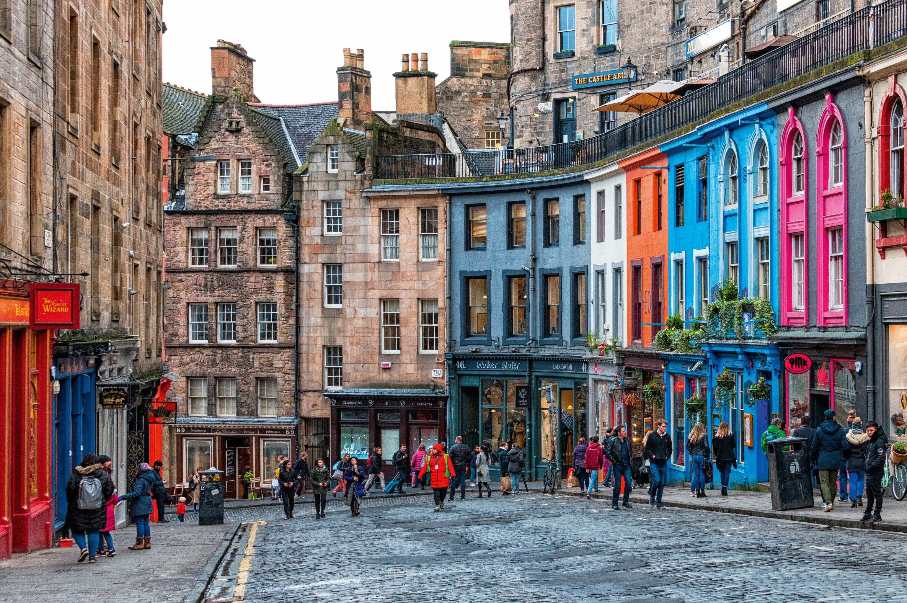
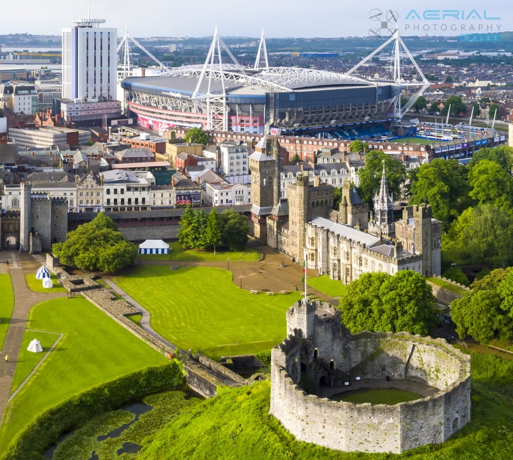
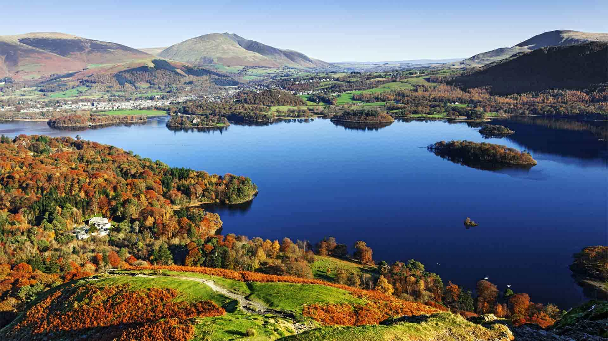

United Kingdom - History, Culture, and Scenic Landscapes

Introduction
The United Kingdom is a nation rich in history, culture, and natural beauty. Comprising England, Scotland, Wales, and Northern Ireland, it offers vibrant cities, historic castles, rolling countryside, and stunning coastal scenery.
Visitors can explore iconic landmarks such as Big Ben, Buckingham Palace, Edinburgh Castle, and Stonehenge. The UK’s diverse regions offer unique traditions, local cuisines, festivals, and landscapes from highlands to lakes, making it a fascinating destination for travelers.
Quick Facts
- Capital: London
- Population: Approximately 67 million
- Language: English
- Currency: Pound Sterling (£)
- Best Time to Visit: May to September
Explore Major Destinations
Jump to a specific destination
\r\n
London
Region: England
London is the capital city of the UK, blending historic landmarks with modern attractions. From the iconic Big Ben and Tower of London to the vibrant West End theatres, London is a cultural hub.
Visitors can enjoy world-class museums like the British Museum, stroll along the Thames, explore royal palaces, and experience diverse cuisine. London’s energy and history make it one of the world’s top travel destinations.
Must-See Attractions
- Big Ben & Houses of Parliament - Iconic symbol of London
- Tower of London - Historic castle and former royal palace
- London Eye - Panoramic view of the city
- Buckingham Palace - Royal residence and Changing of the Guard
- British Museum - Extensive collection of world artifacts
Back to top
Edinburgh

Region: Scotland
Edinburgh, Scotland’s capital, is famous for its historic and cultural landmarks. The Edinburgh Castle dominates the skyline, and the Royal Mile offers historic streets filled with shops, pubs, and museums.
The city hosts the world-renowned Edinburgh Festival and Fringe Festival each summer. Visitors can hike Arthur’s Seat for stunning views and enjoy Scottish cuisine and whisky in traditional establishments.
Must-See Attractions
- Edinburgh Castle - Historic fortress with panoramic city views
- Royal Mile - Medieval street lined with shops and historic sites
- Holyrood Palace - Official royal residence in Scotland
- Arthur's Seat - Ancient volcano with panoramic views
- National Museum of Scotland - Exhibits on history, science, and culture
Back to top
Cardiff

Region: Wales
Cardiff is the capital of Wales, known for its mix of historic and modern attractions. Cardiff Castle offers a glimpse into medieval history, while the city center is lively with shops, restaurants, and arts venues.
Cardiff Bay provides waterfront entertainment, and the Principality Stadium hosts sporting events and concerts. The city is a cultural hub with museums, theaters, and music festivals throughout the year.
Must-See Attractions
- Cardiff Castle - Historic medieval and Victorian castle
- Millennium Stadium (Principality Stadium) - Iconic sports arena
- Cardiff Bay - Waterfront with restaurants and attractions
- National Museum Cardiff - Art, natural history, and archaeology
- St Fagans National Museum of History - Open-air museum of Welsh life
Back to top
Lake District

Region: Northwest England
The Lake District is a national park known for its stunning lakes, mountains, and picturesque villages. Outdoor enthusiasts can enjoy hiking, boating, cycling, and exploring charming towns like Windermere and Keswick.
The region inspired famous poets like William Wordsworth and Beatrix Potter. Its natural beauty, walking trails, and scenic landscapes make it a must-visit for nature lovers and photographers.
Must-See Attractions
- Lake Windermere - Largest natural lake in England
- Scafell Pike - England's highest mountain
- Beatrix Potter’s Hill Top - Historic home of the author
- Keswick - Picturesque town in the northern Lakes
- Derwentwater - Scenic lake with boat tours
Back to top
Travel Tips for the United Kingdom
Here are essential tips for traveling in the UK to help make your trip enjoyable.
- Language: English is widely spoken, but local accents vary; learn basic phrases for Wales and Scotland.
- Dining: Traditional pubs offer hearty meals; tipping 10-15% is customary.
- Weather: UK weather is unpredictable; always carry a waterproof jacket or umbrella.
- Transport: Trains connect major cities efficiently; Oyster card is convenient for London transport.
- Etiquette: Queue politely, respect local customs, and be punctual for trains and tours.
← Back to Europe Home